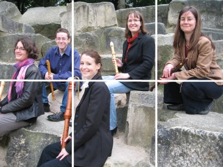
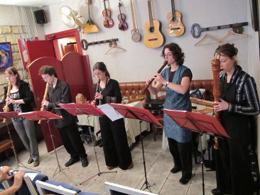
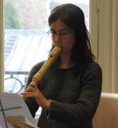
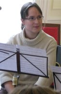

|  |
|---|
|
Vidéo enregistrée en Octobre 2008 |
L’ensemble des Baroqueurs du XVIIIème est constitué de cinq flûtistes à bec qui s’adonnent avec passion à l’interprétation du répertoire de la musique ancienne et contemporaine. Ces musiciens enthousiastes et dynamiques font partager leur amour pour la musique, chaque année, à travers un cycle de concerts, alternant œuvres connues du grand public (Vivaldi, Bach, Corelli, Haendel), œuvres de la Renaissance et œuvres du XXeme. Le jeu de cet ensemble défend avec éloquence un instrument souvent méconnu. |
| Virginie Massuet obtient son DEM de musique ancienne (1er prix de formation musicale en 1997, 1er prix de flûte à bec en 2004, et 1er prix de musique de chambre, à l’unanimité mention très bien en 2006). Elle travaille aujourd'hui l'écriture musicale, arrangeant pour l'ensemble des Baroqueurs des concerti, sonates ou airs prévus à l'origine pour d'autres formations instrumentales. | |
|  | Sylvie Lannoy commence très tôt ses études musicales avec Françoise Defours et obtient en 2005 un prix de flûte à bec mention bien, et en 2006 un prix de musique de chambre mention très bien. |
| Originaire de la région parisienne, Diane Roussignol poursuit ses études musicales à Calais où elle étudie la flûte à bec avec Christine Vossart. Elle entre plus tard au Conservatoire National de Région d’Aubervilliers-la- Courneuve. Elle y travaille avec Françoise Defours et obtient sa médaille d’or, toujours en flûte à bec, en 1998. Habituée à la pratique instrumentale, elle joue dans de nombreux orchestres de chambre et intègre, dès sa formation en 2005, l’ensemble des Baroqueurs du XVIIIème. |
|
|  |
Christine Pinel commence ses études musicales au Conservatoire National de Région de Toulouse à l'âge de six ans. Elle obtient sa médaille de flûte à bec mention bien à l'unanimité en 2000, et son prix de musique de chambre mention très bien à l'unanimité en 2001. En parallèle, elle intègre le département de musique ancienne de son conservatoire, et pendant cinq ans joue dans un orchestre baroque (notamment sous la direction de Hervé Niquet), et dans les ensembles Renaissance. |
Flûtiste à bec et traversier, Jérémy Gerszanowilsz entre au CNR (Conservatoire National de Région) de Paris en 2003 et obtient son DEM de musique ancienne (1ers prix à l'unanimité, mention très bien en flûte à bec, en musique de chambre et ornementation, en formation musicale) en 2005. Il se perfectionne ensuite auprès de Michèle Tellier et Françoise Defours. Titulaire du DE (Diplôme d'État) de professeur de flûte à bec, il enseigne actuellement sa discipline au CNR de Rueil-Malmaison.
|